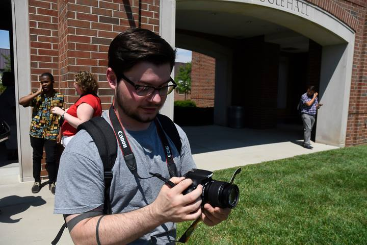
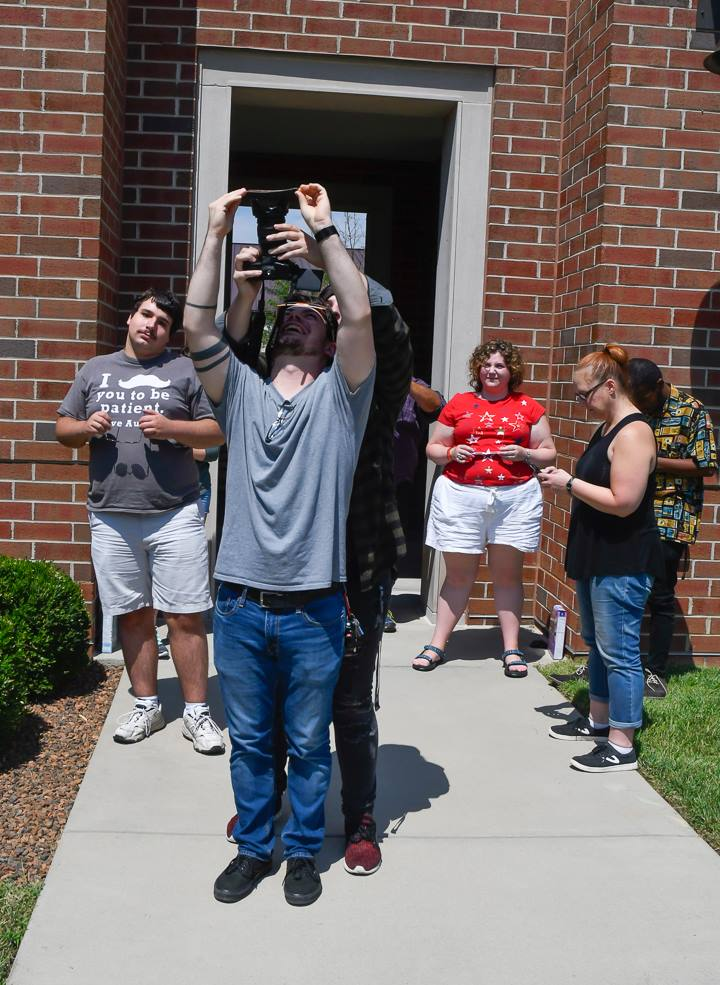

Yes, I'm Still in School
July 14, 2022

More on Topic // Random
Topics //
College for Matt Bramer
I’ve been going to college, studying for my bachelor’s degree in Computer Science since 2019. I took a year off after high school, because I decided school wasn’t for me.
I was wrong, sort of
I then decided I wanted to go to school for photography! That was exciting, I really enjoyed my classes and I thought I wanted to be a filmmaker! And I tried!
I made a bunch of YouTube videos, I filmed a few interviews, I filmed a few concerts, I made a short show, I was a filmmaker for all intents and purposes.
Then What Happened
I decided that being a photographer wasn’t very sustaining, for me. Now, that is not to discourage the many people that are photographers and do that for a living.
I made some of the best friends that I’ve ever had, when I went to Ivy Tech Community College for a few years! We were basically all the same age, focused on something we all loved: Photography. It was amazing, nearly everyday I had a large group of friends that I grew really close with, and then I quit.
I just stopped going to school. I decided school wasn’t for me anymore. It was a difficult decision, not only to quit school but to lose those close relationships that I had with my friends.
I’d say, at least for me, I’m still friends with those people I was friends with when we went to Ivy Tech. I’m still Facebook friends with most of them! They’re all doing very well for themselves in their own right! I’m very proud of all they’ve accomplished.
I will also say, I was very sad when I saw all of them graduating a few years after I quit school. That could’ve been me there too.
Then I Met Sandy
And that all changed! We got together and I was happy again. I fell in love, she was everything to me! She made me happy and made me want to be better. We got married, bought a house, got a dog, started working to start a family! All the while, Sandy was in school to get her own Bachelor’s Degree. For her Psychology was her specialty.
Sandy graduated in 2018, the year we got married. And by that time, I was itching to get back. I made those friends when I went to school on campus, but now I had to change. I had to go back to school online.
2019, Online Schooling
I have always loved Computer Programming and I knew that is a pretty lucrative career path, so Sandy and I talked, and it was time for me to go back to school. This time, however, would be online. As we trying to start our family I was busting my butt to work on school work. I was considered full-time before our son was born. I would take two classes at a time. Which doesn’t sound like much, but at SNHU each semester is a shortened 8 week course load (the standard college semester is 16 weeks).
So two classes at a time meant, every single night I was in the office cramming homework and studying in. That wouldn’t be too feasible with a baby crying in the other room, needing some daddy time.
I cut back to one class a semester. That was a tough decision as well, because that means I wouldn’t graduate until 2025, if not 2024. And that was a long way away in 2019, when I started.
I started in 2019 at Southern New Hampshire University with some previous credits from Ivy Tech, so that’s helped a bunch! But, I still have a ways to go.
Bachelor’s Degree, here I come
According to my emails with my Academic Advisor and my Course Plan with SNHU, I should finish my degree in 2024. Another two years to go.
Every class makes it more and more difficult to stay motivated. I struggle with some classes, and I know that it will only get more difficult as the degree progresses. But, it will all be worth it to hold that degree. And then have to pay back all that Student Loan Debt.
Would I recommend college?
It depends. I feel, when I’ve completed my degree, I will say it was all worth it. During these trying times when I’m trying to decide whether to work on homework or sleep next to my beautiful wife, I more often choose to sleep next to my beautiful wife.
That’s not always the case, sometimes I have to make the difficult decision to work on homework when I’m exhausted and struggling to keep my eyes open, and I have to wake up in a few hours to go to work the next day; but like I said, it will all be worth it.
Reliving My Photography Days
Okay, so I was going through my Facebook Memories and that reminding me of my time at Ivy Tech as a full blown photographer.
Go check out my work on Behance: My Behance Page.